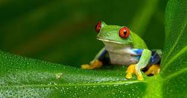

Nacidos en dificultades
El clima cambiante también está fomentando la propagación de un hongo mortal conocido como el hongo quítrido de los anfibios. Los bosques de tierras bajas se vuelven más cálidos, pero a medida que aumenta la humedad, se forman nubes más gruesas en las montañas y el hábitat de estas ranas se vuelve mucho más frío. Como las ranas son ectotérmicas -dependen de fuentes externas para el calor corporal-, su sistema inmunitario se debilita y el hongo quítrido prospera. La enfermedad resultante, la quitridiomicosis, tiene anfibios afectados en todo el mundo, infectando y destruyendo más especies de vertebrados que cualquier enfermedad en la historia registrada. Un tercio de las especies de anfibios ahora están en peligro de extinción; alrededor de 120 ya se han perdido.
